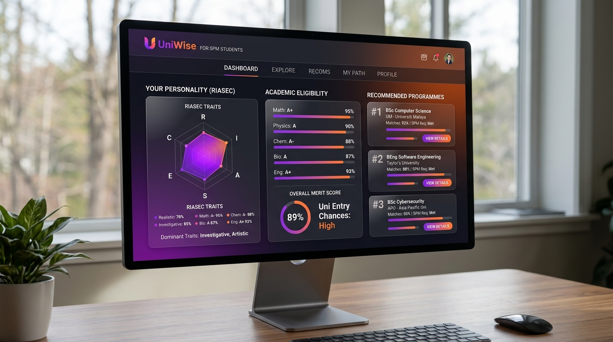

Ongoing • FYP
Web
Application
React
Laravel
MySQL
Firebase
Auth
UniWise: Educational Recommendation System
A web-based personalised educational recommendation system for SPM graduates. Synthesizes academic results, merit calculations, and Holland RIASEC personality traits using a rule-based matching engine to recommend eligible Diploma, Foundation, and Certificate programmes across Malaysian public universities (IPTA).